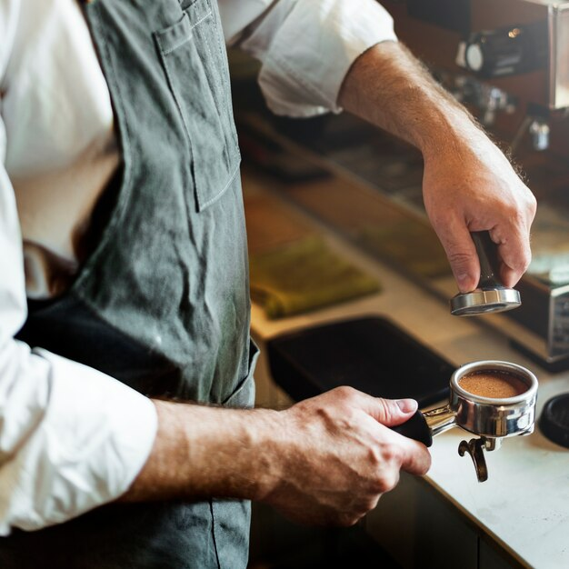
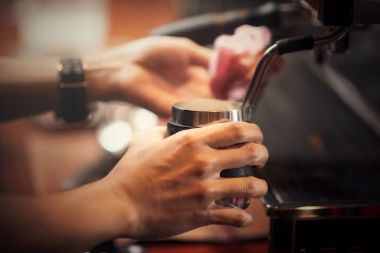
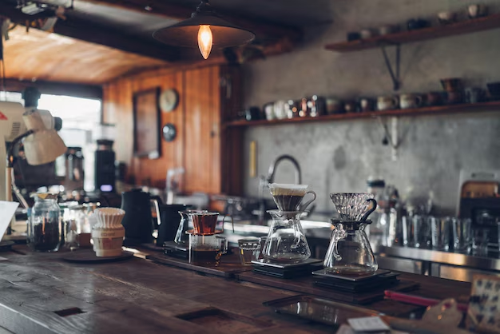
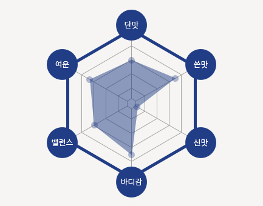
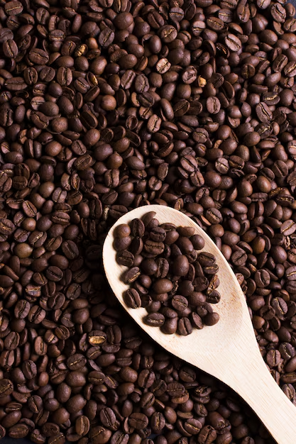

-
NESCAFE BEAN,
-
Always
BESIDE YOU
-
NESCAFE
커피 한 잔 속에 담긴 수많은 전문가의 노력
네스카페가 고객을 위해 지켜온 약속입니다.
Coffee Bean
네스카페는 아라비카
100% 원두만을 공급합니다.
원두가 가장 잘 자라는 기후와 비옥한 토양을 가진
커피벨트에서 생산된
고품질의 원두를
엄선하여 더욱 완벽한 맛과 풍미를 제공합니다.
원두가 가장 잘 자라는 기후와 비옥한 토양을 가진
커피벨트에서 생산된
고품질의 원두를
엄선하여 더욱 완벽한 맛과 풍미를 제공합니다.
-
Specialist
커피 본연의
신선함을 제공합니다. -
다년간 축적된 네스카페만의 원두관리
노하우를 바탕으로 원두가 가진
고유의 맛과 향 그대로 신선함 커피만을 제공합니다.커피벨트에서 생산되는 스페셜티 급의
품질 좋은 생두를 엄선하여 까다로운 블렌딩 과정을 거쳐
네스카페의 스페셜티 원두로 다시 태어납니다.
Barista
커피를 연구하는 최고의 분야별 전문가와 함께 합니다.
-
 -
수많은 전문가들이 더 좋은 커피를 만들기 위해 함께 연구하고, 지속적인 투자로 국내 최고의 시스템을 구축하고 있습니다.
국내 최고의 Q-grader (감별사)와 커피 전문 Roaster(로스터)가 커피의 특성을 파악하기 위해 샘플 로스팅을 합니다. 
-
수많은 전문가들이 더 좋은 커피를 만들기 위해 함께 연구하고,
지속적인 투자로 국내 최고의 시스템을 구축하고 있습니다.
국내 최고의 Q-grader (감별사)와 커피 전문 Roaster(로스터)가
커피의 특성을 파악하기 위해 샘플 로스팅을 합니다.
-
-
QUALITY
ALWAYS BESIDE YOU,
NESCAFE
-
-
네스카페 원두의 특징
커피 본연의 풍부한 향을 첫 느낌으로,
고소한 단 맛과 구수한 쓴 맛,
깊고 중후한 긴 여운을 품고 있는 균형 잡힌 향미의 조화
커피 본연의 맛과 향에 영향을 줄 수 있는 이물질
(나뭇가지, 잎사귀, 돌 등)을 제거합니다. -
-
-

-
네스카페 원두의 특징
커피 본연의 풍부한 향을 첫 느낌으로,
고소한 단 맛과 구수한 쓴 맛,
깊고 중후한 긴 여운을 품고 있는 균형 잡힌 향미의 조화
대한 커피 본연의 맛과 향에 영향을 줄 수 있는 이물질
(나뭇가지, 잎사귀, 돌 등)을 제거합니다. -
-